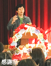
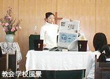
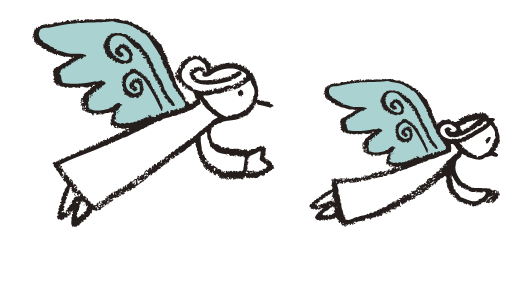

教会学校へようこそ！
教会学校（C.S.）ってどんなところ？
教会学校は Church School(CS)ともいいます。
豊沢教会の教会学校は 1908 年（明治 41 年）から始まった長い歴史があります。
こどもたちを中心に、赤ちゃんから大人まで、一緒になって礼拝をし、その後
で楽しい「分級」のひとときをもちます。
 
教会学校のプログラム
2階礼拝堂 / 日曜日午前9:30～10:15
日曜日の朝9:30から10:15くらいまでです。
最初に「礼拝」を守り、その後「分級」の時間になります。
「礼拝」ってなに？
神さまのお話を聴き、讃美歌を歌い、お祈りを合わせ、感謝の気持ちとして献金を捧げます。
「分級」ってなに？
礼拝の後にお友達が集まり、工作やゲームをしたり、皆で季節のイベントの準備をするなど、楽しんだり協力しながら親睦を深める時間です。
